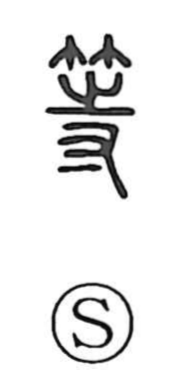

等

Kun: hitoshii, nado | On: tou, do
equal ・ class ・ grade ・ companions
Explanation
等 combines 竹, bamboo, with the sound element 寺. It first concerns bamboo or wooden writing strips of matching length. Such strips were cut to prescribed sizes and bound together to make a book; the pieces in one set had to agree.
Matching the strips gives ‘equal’ and ‘make equal.’ Measuring them against one another also gives ‘compare’ or ‘assess.’ Once things are compared, they can be arranged into grades or classes, so 等 can mean a level, rank, or group of the same kind. Equality and grading meet in the same operation: determine the differences, then place together what belongs at the same level.